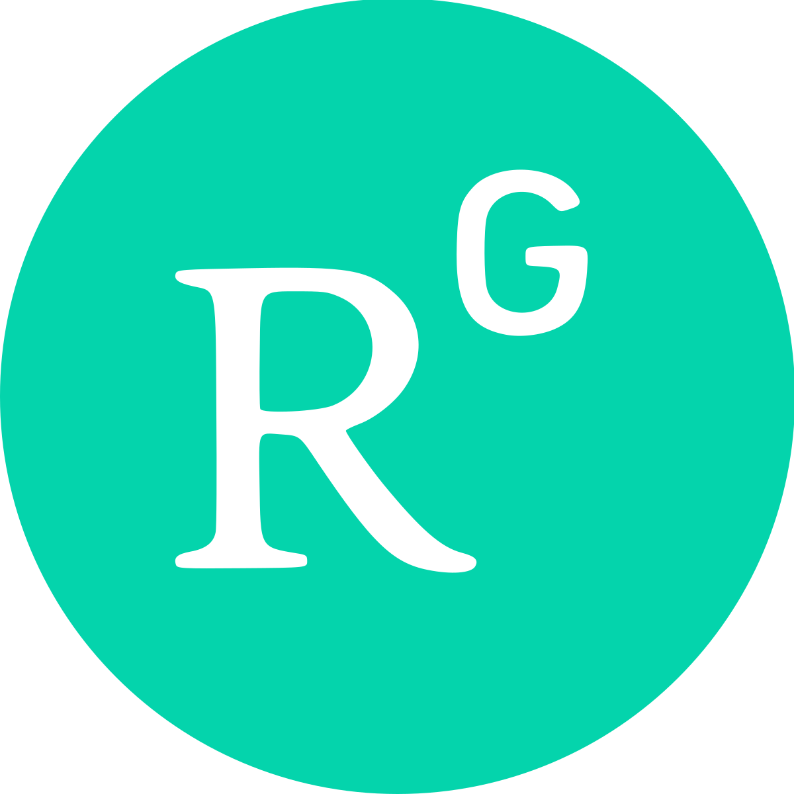

Md. Hamidur Rahman
|
Md. Hamidur Rahman (he/him) Seeking MS &/ PhD Opportunity
Email: hamidur2413[at]student[dot]nstu.edu.bd  ResearchGate |
I’m a prospective graduate student; actively looking for a Ph.D. position in Information Science. My research interest lies in Human-Computer Interaction (HCI), Privacy/Security, Accessibility, User experience design. I employ qualitative and quantitative methods, including surveys, interviews, and thematic codes.
I strongly believe that my qualifications and experiences will prove that I am a suitable fit for any RA position. I am also actively collaborating in research that aligns with my research interests.
Biography
Md. Hamidur Rahman has received his Master of Social Science (MSS) in Information Science and Library Management from Noakhali Science and Technology University, Bangladesh, securing a CGPA of 3.93 out of 4.00. He also completed his Bachelor of Social Science (BSS) in the same field from NSTU, achieving a CGPA of 3.57, with a last four-semester CGPA of 3.81.
During his academic journey, he worked as an Internship Trainee at the Bangladesh National Scientific and Technical Documentation Center (BANSDOC) and Dhaka University Library, gaining hands-on experience in library operations, digital resource management, and information services. His research interests lie in digital resources, digital libraries, information literacy, human-computer interaction, user experience design, and privacy/security in information access. He has been actively involved in research.
Hamidur has developed expertise in data analysis, web design, and digital marketing through various training programs. He is proficient in Microsoft Office, Koha, DSpace, SPSS, Python, Figma, and Photoshop.
He has been recognized for his academic excellence with merit-based scholarships awarded by Noakhali Science and Technology University (NSTU) in both the 5th semester of his undergraduate studies and the 2nd semester of his graduate program. This merit-based waiver is granted to the top three students in each semester. In addition to this, he also received the Noakhali Municipal Mayor Primary Scholarship in 2008 and the Bangladesh Employee Welfare Board Scholarship from 2018 to 2024 in recognition of his consistent academic achievement and merit.
Hamidur is passionate about research and innovation in the field of information science and is actively seeking opportunities to contribute to academia.
News
- [JUL 2025] First Research Article Published.
- [NOV 2024] Completed Master's from Noakhali Science and Technology University.
- [NOV 2024] Achieved a perfect 4.00/4.00 GPA in the master's final semester.
- [OCT 2024] Successfully defended my thesis.
- [AUG 2023] Started Master's at Noakhali Science and Technology University.
- [MAY 2023] Graduated with a Bachelor's degree in Information Science and Library Management from Noakhali Science and Technology University.